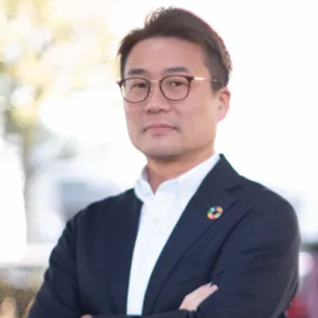
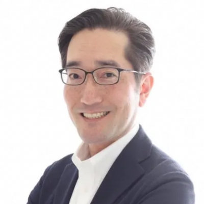
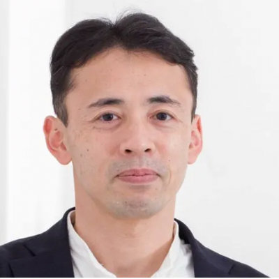
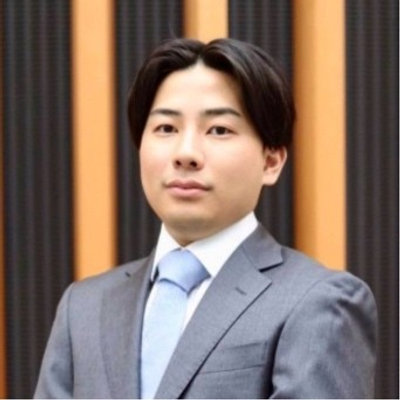
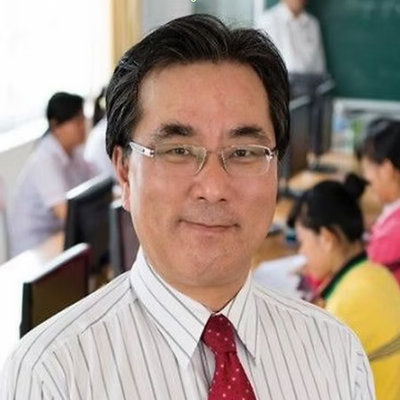
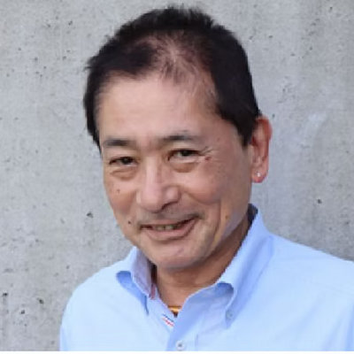
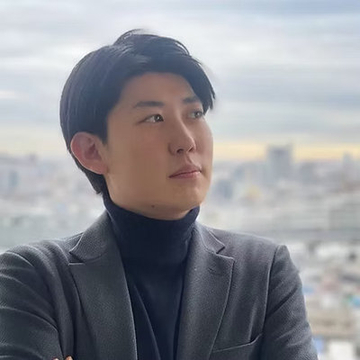

XWIN treats AI, data and digital assets as a new form of capital, and redesigns how management, people, information and finance work.
We combine consulting, education, AI and blockchain, and stay through implementation and operation rather than stopping at the strategy.
Working across our group in Japan and Singapore, we build new value for companies and for individuals.
When technology moves this fast, what matters is not which tool you pick but what you are designing for, and how.
We take management, people, data and digital assets together, and design the mechanisms that lead to better decisions and growth that lasts.
Seven people. Every one of us built a career inside Japanese business, and five have been posted overseas. Two sit on the board without executive duties, running businesses of their own.

Led the global division of a management consulting firm, founded its Vietnamese subsidiary and ran it as president, then opened offices in Thailand, Indonesia and Singapore. Previously posted to the United States. Co-founded XWIN in 2020. Began his career as a schoolteacher.

Twenty-three years with the Canon group. Covered major banks and a global automaker in Japan, then moved to the United States as sales manager for the north-east including New York, and went on to product marketing across the Americas. Back in Japan, ran the business for German and Swiss product lines.

Twenty years in trading, four of them as a hedge fund manager. Traded and managed risk in equities, FX, commodities and crypto at Deutsche Bank, the Tokyo Financial Exchange, Monex Group and DeCurret. CFA charterholder.

Builds the blockchain infrastructure behind our asset management. Holds a master’s in Computer Information Technology from the University of Pennsylvania.

Nikko Securities and then Prudential-Bache Securities in the United States, and resident in Ho Chi Minh City since 2007. Founded a Japan–Vietnam investment consultancy and, in 2013, concluded JICA’s first private-sector investment finance agreement, between Long An province and the city of Kobe. Also runs ventures with JA Zen-Noh and Ministop.

President of Seiho Kosan Co., Ltd., founded 1955 in Shunan, Yamaguchi, with 98 staff. The company contracts work inside chemical plants, high-pressure cleaning, haulage, and placement of overseas talent. He also owns the racing team AR UBE RT.

Formerly with the National Tax Bureau, then financial analysis, due diligence and asset management in venture capital and consulting.
The XWIN group pairs consulting and training out of Japan with asset management in Singapore, covering everything from management support through to finance.